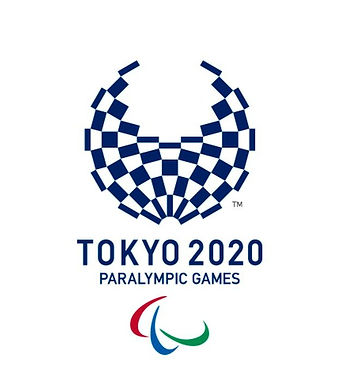
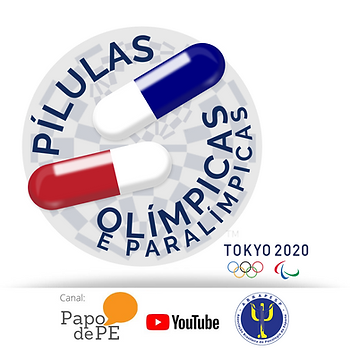

(matéria atualizada diariamente)

Acompanhe a agenda dos jogos e participe do Pílulas Paralímpicas no Canal Papo de PE no YouTube.
Aproveita e conheça os medalhistas brasileiros e uma dica de curso na área.
Quinta-feira, 2 de setembro
- 21 horas – 9 horas: Badminton individual e em grupos – masculino e feminino (quartas de final)
- 21 horas – 9 horas: Badminton duplas mistas
- 21 horas – 23h35min: Natação masculino e feminino (diversas modalidades – eliminatórias 50, 100 e 200 metros)
- 21h30min – 00h10min: Canoagem masculino e feminino (semifinais e finais)
- 21h30min – 00h55min: Lançamento de peso feminino (final)
- 21h30min – 00h55min: Salto em distância feminino (final)
- 21h30min – 00h55min: Lançamento de dardo masculino (final)
- 21h30min – 00h55min: Lançamento de disco masculino (final)
- 21h30min – 00h55min: Salto em altura masculino (final)
- 21h30min – 00h55min: Atletismo masculino e feminino (diversas modalidades – semifinais e finais)
- 21h30min – 00h55min: Bocha duplas mistas (preliminares)
- 21h30min – 4h30min: Tiro esportivo masculino e feminino (qualificatórias e finais)
- 21h30min – 4h45min: Ciclismo masculino e feminino
- 22 horas – 2h15min: Tiro com arco masculino individual (eliminatórias)
- 22 horas – 3 horas: Taekwondo masculino -75kg e feminino -58kg (partidas, quartas de final e repescagem das quartas de final)
- 22 horas – 3h30min: Tênis de mesa em equipes masculino e feminino (finais)
Sexta-feira, 3 de setembro
- 0h30min – 4h30min: Basquete masculino e feminino (classificatórias)
- 0 hora – 6 horas: Tênis em cadeira de rodas masculino e feminino (disputa pela medalha de ouro)
- 1h15min – 4h15min: Golbol masculino e feminino (disputa pela medalha de bronze)
- 1h30min – 5 horas: Vôlei sentado feminino (classificatórias)
- 2h25min – 7h35min: Bocha duplas e equipes mistas (preliminares)
- 5 horas – 9 horas: Natação masculino e feminino (diversas modalidades – finais)
- 5 horas – 9 horas: Tênis de mesa em equipes masculino (finais)
- 5 horas – 10h10min: Taekwondo masculino -75kg e feminino -58kg (repescagens, semifinais e disputas de ouro e bronze)
- 5h30min – 9h55min: Tiro com arco masculino individual (eliminatórias, quartas de final, semifinais, disputa de ouro e bronze)
- 5h45min – 9h55min: Golbol masculino e feminino (disputa pela medalha de ouro)
- 6h15min – 10h15min: Basquete masculino (semifinais)
- 6h30min – 10 horas: Vôlei sentado feminino (semifinais)
- 7 horas – 9h55min: Salto em distância feminino (final)
- 7 horas – 9h55min: Lançamento de club feminino (final)
- 7 horas – 9h55min: Arremesso de peso masculino (final)
- 7 horas – 9h55min: Lançamento de dardo feminino (final)
- 7 horas – 9h55min: Atletismo masculino e feminino (diversas modalidades – eliminatórias e finais)
- 21 horas – 9 horas: Badminton individual e duplas – masculino e feminino (semifinais e disputas por medalhas de ouro e bronze)
- 21h30min – 0h30min: Canoagem masculino e feminino (semifinais e finais)
- 21h30min – 00h40min: Lançamento de dardo feminino (final)
- 21h30min – 00h40min: Arremesso de peso masculino (final)
- 21h30min – 00h40min: Lançamento de peso feminino (final)
- 21h30min – 00h40min: Salto em distância masculino (final)
- 21h30min – 00h40min: Atletismo masculino e feminino (diversas modalidades – eliminatórias e finais)
- 21h30min – 1h50min: Bocha duplas e equipes mistas (semifinais e disputas pela medalhas de bronze)
- 21h30min – 3h45min: Tiro esportivo misto (qualificatórias e finais)
- 22 horas – 0 hora: Tiro com arco equipe mista (eliminatórias)
- 22 horas – 3 horas: Taekwondo masculino +75kg e feminino +58kg (partidas, quartas de final e repescagem das quartas de final)
- 23h30min – 1 hora: Futebol de 5 masculino (disputa pela medalha de bronze)
Sábado, 4 de setembro
- 0 hora – 6 horas: Tênis em cadeira de rodas individual e duplas – masculino e feminino (disputa pelas medalhas de ouro)
- 2 horas – 10 horas: Vôlei sentado masculino e feminino (disputas pelas medalhas de ouro e bronze)
- 2h15min – 4 horas: Basquete masculino (classificatórias)
- 3h20min – 9h15min: Bocha duplas e equipes mistas (disputas pelas medalhas de ouro)
- 5 horas – 10h10min: Taekwondo masculino +75kg e feminino +58kg (repescagens, semifinais e disputas de ouro e bronze)
- 5h30min – 7h35min: Futebol de 5 (disputa pela medalha de ouro)
- 5h30min – 8h35min: Tiro com arco equipe mista (quartas de final, semifinais, disputa por medalhas de ouro e bronze)
- 5h45 – 10h15min: Basquete feminino (disputa pelas medalhas de ouro e bronze)
- 7 horas – 10 horas: Lançamento de dardo masculino (final)
- 7 horas – 10 horas: Lançamento de peso masculino (final)
- 7 horas – 10 horas: Salto em distância masculino (final)
- 7 horas – 10 horas: Lançamento de disco feminino (final)
- 7 horas – 10 horas: Arremesso de peso masculino (final)
- 7 horas – 10 horas: Atletismo masculino e feminino (diversas modalidades – finais)
- 18h30min – 23h30min: Maratona masculina e feminina (diversas modalidades)
- 21 horas – 2 horas: Badminton individual e duplas – masculino e feminino (disputas pelas medalhas de ouro e bronze)
- 21h30min – 0h30min: Tiro esportivo misto (qualificatórias e finais)
- 22 horas – 1 hora: Vôlei sentado feminino (disputa pela medalha de ouro)
- 22 horas – 2h30min: Basquete masculino (disputas pelas medalhas de ouro e bronze)

Domingo, 5 de setembro
- 8 horas – 10h30min: Cerimônia de encerramento
Medalhas brasileiras
Ouro Gabriel Bandeira – natação, 100m borboleta da classe S14. Petrucio Ferreira – atletismo, 100m da classe T47. Silvânia Costa – atletismo, salto em distância da classe T11. Wallace dos Santos – atletismo, arremesso de peso da classe F55. Wendell Belarmino – natação, 50m livre da classe S11. Yeltsin Jacques – atletismo, 5000m da classe T11. Beth Gomes – atletismo, lançamento de disco da classe F53. Carol Santiago – natação, campeã nos 50m livre da classe S1. Mariana D’Andrea – halterofilismo, levantamento de peso na categoria até 73 quilos. Alana Maldonado – judô, na categoria até 70 quilos da classe B2. Gabriel Araújo – natação, 200m livre da classe S2. Claudiney Batista – atletismo, lançamento de disco da classe F56. Yeltsin Jacques – atletismo, 1.500m da classe T11. Maria Carolina Santiago – natação, 100m livre da classe S12.
Prata Gabriel Araújo – natação, 100m costas da classe S2. Jovane Guissone – esgrima em cadeira de rodas, na espada individual, pela categoria B. Rodolpho Riskalla – hipismo de adestramento. Gabriel Bandeira – natação, 200m livre da classe S14. Bruna Alexandre – tênis de mesa da classe 10. Thalita Simplício – atletismo, 400m da classe T11. Vinícius Rodrigues – atletismo, 100 metros da classe T63. Alessandro Rodrigo da Silva – atletismo, arremesso de peso da classe F11. Gabriel Bandeira – natação, 200m medley da classe SM14 Raíssa Rocha Machado – atletismo, lançamento de dardo da classe F56. Equipe de natação – Revezamento 4x100m livre misto para deficientes visuais. Atletas participantes: Maria Carolina Santiago, Wendell Belarmino, Douglas Matera e Lucilene Sousa.
Bronze Daniel Dias – nos 100m livre da classe S5. Daniel Dias – nos 200m livre da classe S5. Phelipe Rodrigues – natação, 50m livre da classe S10. Equipe de natação: revezamento 4 x 50m livre misto Atletas participantes: Daniel Dias, Joana Neves, Talisson Glock e Patrícia Santos. Washington Junior – atletismo, 100m da classe T47. Maria Carolina Santiago – natação, 100m costas da classe S12. João Victor Teixeira – atletismo, arremesso de peso da classe F37. Renê Pereira – remo na prova do single skiff masculino da classe PR1. Meg Emmerich – judô, na categoria até 70 quilos da classe B3. Beatriz Carneiro – natação, 100 m peito da classe SB14. Cícero Valdiran Lins Nobre – atletismo, lançamento de dardo da classe F57. Julyana da Silva – atletismo, lançamento de disco da classe F57. Cátia Oliveira – tênis de mesa pela classe 2. Lúcia Araújo – judô, na categoria até 57 quilos da classe B3. Equipe de natação: Equipe de natação: revezamento 4 x 100m da classe S14. Atletas participantes: nadadores Ana Karolina Soares , Debora Carneiro, Felipe Vila Real e Gabriel Bandeira. Jardênia Felix – atletismo, nos 400m da classe T20. Mariana Gesteira – natação, nos 100m livre da classe S9.
Quer saber mais? Aqui o link do curso on line de ESPORTES PARALÍMPICOS